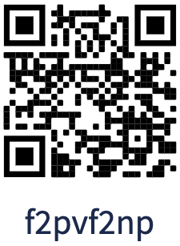

Avaa tämä sivu puhelimellasi varmistaaksesi älypuhelimen yhteensopivuuden. Tarkista, että kaikki tarkistukset alla ovat tilassa OK.
| GPS sijainti | Odottaa tilaa |
| QR-koodien luku | Odottaa tilaa |
Lue alta lisää jokaisesta toiminnosta.
Kätkön toiminta vaatii älypuhelimen sijainnin jakamista. Pyydämme oikeutta käyttää puhelimen sijaintia. Sijaintia tarvitaan vain hetkellisesti kätkön aikana ja jaat sijaintisi vain ollessasi sivuillamme.
Kätkön suorittaminen helpottuu jos puhelimellasi voi lukea QR-koodeja. Uusimmilla puhelinmalleilla riittää kameran avaaminen ja QR-koodia kohti osoittaminen. Jos ominaisuutta ei ole tuettu suoraan voit ladata siihen sopivan ohjelman (esim. Androidilla Google Lens).
Jos et pysty lukemaan QR-koodeja puhelimellasi voit syöttää annetun koodin tälle sivulle: QR koodin syöttö
Lue alla oleva QR-koodi ( f2pvf2np ) testaaksesi ominaisuuden toimivuus.
